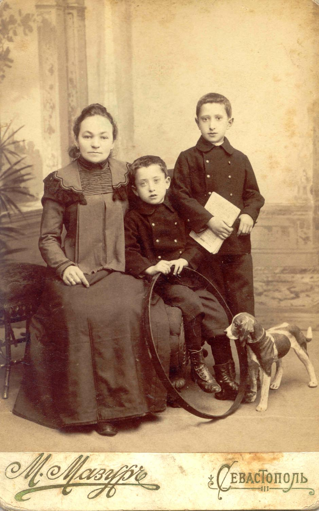
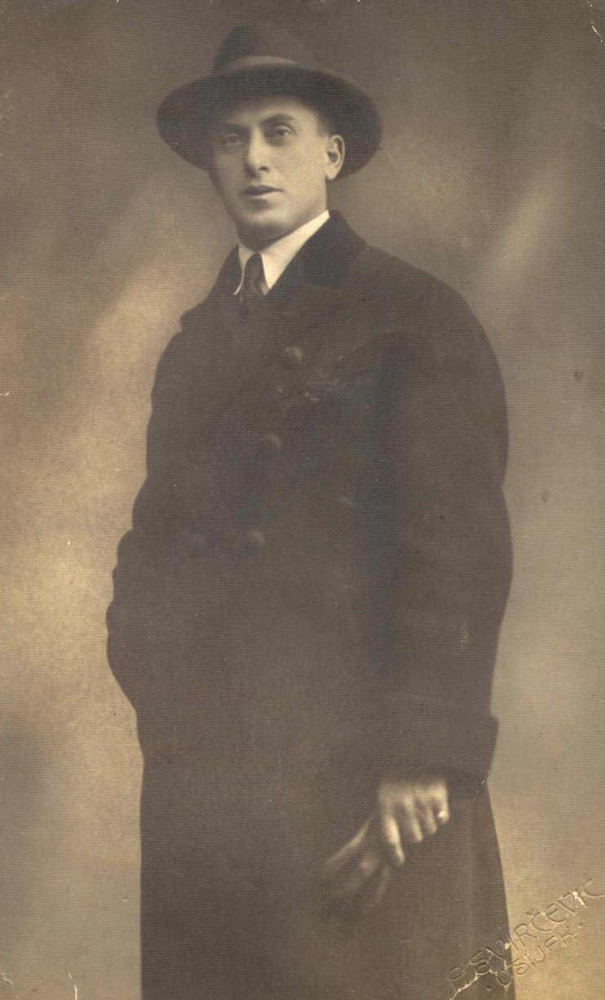
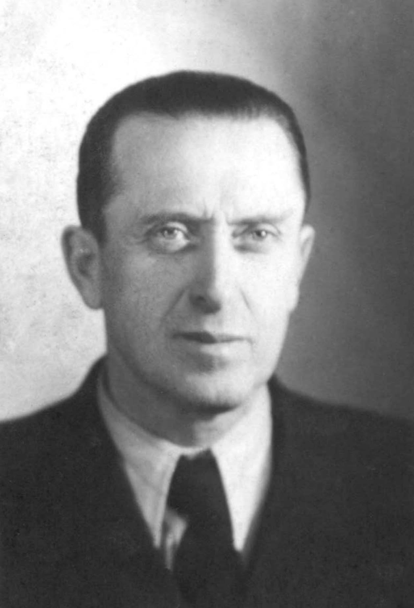

Родился 20 января 1895 года в Севастополе.
Родители:
отец - Баккал Эльезар (Лазарь) Ильягович,
мать - Баккал Лея Давидовна.
Принят на военную службу в 1915 году в Бахчисарае. Был ротным писарем в 32-м запасном батальоне в г. Симферополе. Офицер царской армии. В 1919 году, после прихода большевиков, бежал из Росии в Хорватию, так как всех царских офицеров в Крыму расстреливали.
Перед побегом в его квартиру в Севастополе пришли матросы с обыском. Но до этого он успел переодеться в солдатскую форму, которую принес ему сын служанки Глафиры. Проводящие обыск матросы говорили, что в доме пахнет офицерским духом, но ничего не нашли.
Первым его городом в Хорватии стал Дубровник, где он сменил имя и фамилию на Борис Бакал.
Примерно в 1926 году женился на хорватке Зoре, которая родила ему дочь Зорку Бакал в 1928 году (ее все звали Бебе) и сына Александра в 1929 году.
Жил в разных городах Хорватии: Загребе, Осиеке и др. Одно время, недолго жил в Сербии. Работал в качестве специалиста по заготовке и обработке древесины, а позднее на железной дороге.
Вместе с женой перехали в Буэнос-Айрес в 1957 году. Дети не поехали в Аргентину и остались в Загребе.
Умер от рака желудка в 1958 году.
Урна с прахом была в Аргентине до смерти его жены в 1984 году.
После чего обе урны были перевезены в Загреб, где и захороненны на Мирогойском кладбище.
На первом фото - Глафира, Абрам и Исаак Баккалы.
На втором - Борис Бакал в 1925 году.
На третьем - Борис Бакал в 1943 году.
На четвертом - могила Бориса и Зоры Бакал в Загребе.
Служанка Глафира обожала Абрама. Он родился почти одновременно с ее сыном. У Глафиры было очень много молока, и, гуляя с Абрамом она кормила его грудью. Мать Абрама об этом не знала и очень удивлялась, ребенок почти ничего не ест, но растет как на дрожжах. Потом все, конечно, выяснилось.
Из воспоминаний Бикенеш Баккал.


